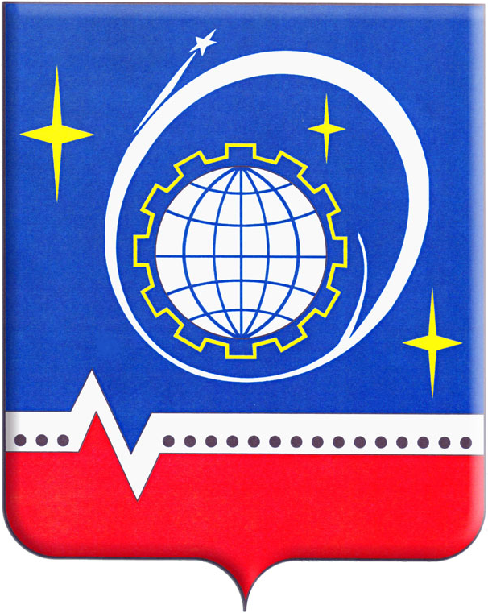

 Королёв (основан 26 декабря 1938 года; до 8 июля 1996 года — Калининград) — город в Московской области России, наукоград (с 12 апреля 2001). Образует одноимённый городской округ. Население — 220 947 чел. (2015). Королёв часто неофициально называют космической столицей России.
Законом Московской области № 53/2014-ОЗ от 21 мая 2014 года в состав городского округа Королёв вошёл городской округ Юбилейный, а упразднённый город Юбилейный стал частью города Королёва (причиной объединения был назван дефицит площадей для развития города Королёва). Губернатор Московской области ранее не исключил того, что к объединённому округу будут присоединены территории прилегающих муниципальных образований.
Город расположен к северо-востоку от Москвы, в 23 км от центра и в 6—7 км от МКАД по Ярославскому шоссе. Ярославское шоссе является западной границей Королёва (исключая Залинейный район). С юга к городу примыкает Национальный парк «Лосиный Остров», а с севера и востока — дачные посёлки. В городе протекает река Клязьма, а также много мелких рек (в части Лосиного Острова). Лесные массивы в черте города занимают территорию 3800 га. Также в черте города находится часть урочища «Яузский водоболотный комплекс». Площадь, занимаемая городом, равна 55,44 км². Площадь городского округа — 55,47 км².
На главную